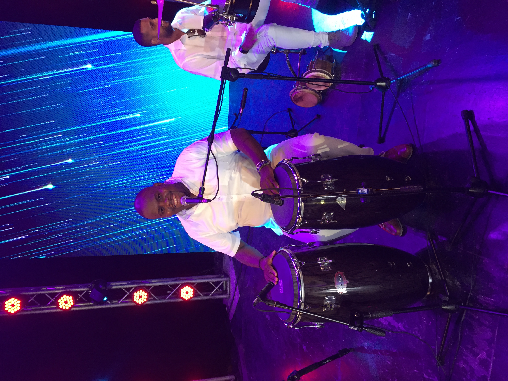

Música cubana con corazón y raíz
Jelengue, agrupación de música popular cubana. 30 años de historia, innovación y ritmo.
Contrátanos¿Quiénes somos?
Jelengue nació en 1992, reuniendo músicos de formación académica y autodidacta. Somos una familia musical, apasionados por los ritmos cubanos: son, cha cha chá, mambo, bolero, salsa, latin jazz… Nuestra esencia es el mestizaje y el respeto por la raíz, pero también la innovación y la fusión con sonidos contemporáneos. Hemos compartido escenario con grandes como Eliades Ochoa, Andy Montañez, Oscar D’León y más, llevando el espíritu de Cuba a festivales, teatros y plazas de América, Europa, África y el Caribe. Para nosotros, cada presentación es un encuentro, una fiesta de la autenticidad, un homenaje a la alegría y la resistencia de la cultura cubana. Jelengue es una agrupación viva, abierta al mundo y a nuevas generaciones. Nuestro legado es la emoción y la calidad que transmitimos en cada nota y cada verso.
Jelengue es parte del Catálogo de Excelencia de la Empresa Comercializadora de la Música y los Espectáculos “Ignacio Piñeiro”, siendo una de las agrupaciones más importantes dentro de la música popular y tradicional con 30 años de experiencia.
Discografía
- CD “Buscando la Felicidad” (EGREM/CUBA)
- CD “Sencillamente Jelengue” (COLIBRÍ/CUBA)
- CD “Así Bailamos en Cuba” (Boumqueur Edition, Francia)
- Compilaciones: “Soneando”, “Boleros a mi Manera”, “Son de Cuba”, “Havana Club, Sueño del Caribe”, “El Gran Tesoro de la Música Cubana”, “Pasaporte Afrolatino”, “Havana Now”, “Locos por mi Música”, “¡Ay Doña Inés!”, “Selección de Cuba” (Vol. I y II), y más.
Premios & Participaciones
- Gran Premio de Composición Havana Club/Egrem
- Premio CPM “Ignacio Piñeiro”
- Record Guinness “El Son más Largo del Mundo”
- Primer lugar Hit Parade: “Cachita”
- Bandas sonoras para TV y novelas cubanas
- Participaciones en programas como “23 y M”, “Tiempos”, “Mediodía en TV”, “Raíces Caribeña” (Venezuela), entre otros
Integrantes
-
 César Regueiro Arana "Yiyo" Director, voz líder, guitarra, compositor y orquestador
César Regueiro Arana "Yiyo" Director, voz líder, guitarra, compositor y orquestador -
 Raúl Enrique Tamayo Cabrera "Pototo" Bajo y coros
Raúl Enrique Tamayo Cabrera "Pototo" Bajo y coros -
Angel Luis Balmaseda Correoso "El Sinsonte" Voz líder, percusión, teclados, compositor y orquestador
-
Sandor Saint-Hill Montejo Piano y teclados
-

Mauris Marrero Mora Congas, coros y percusión
-
Joan Sánchez Fonseca Timbal, drums, cajón, bongó
-
Daniel González Orama Trompeta y fiscorno
-
 Javier Enrique Puente Pomar Timbal, güiro, bongó y cajón
Javier Enrique Puente Pomar Timbal, güiro, bongó y cajón -
Adalberto Joubert Díaz Trompeta y fiscorno
-
Osmel Cruz Torres Tres, guitarra eléctrica y coros
-
Ernesto Guillermo Palma Sánchez Bongó, congas y percusión
-
 Jorge Andrés Campos Rodríguez "El Niño" Sonido, grabación, mezcla y masterización
Jorge Andrés Campos Rodríguez "El Niño" Sonido, grabación, mezcla y masterización -
Yolanda Caridad Pedroso Bernal Representante Artística
-
Iomany Rivera Montalvo Técnico de Audio y utilero
Giras y Presentaciones
- Venezuela, España, Portugal, Etiopía, Alemania, Francia, México, Canadá, USA...
- Festivales: Bilbao Tropical, La Mar de Música, Madrid Morena, Noches de Verano (Cuenca), y más.
- Colaboraciones con Eliades Ochoa, Andy Montañez, Omara Portuondo, Yuri Buenaventura...
- Eventos recientes: Bellas Artes, 500 Aniversario de La Habana, conciertos online y en TV cubana.
Repertorio
- Lágrimas Negras (bolero son) — Miguel Matamoros
- El Chan Chan (son) — Compay Segundo
- Tintorera ya Llegó (son) — Arsenio Rodríguez
- Bonito y Sabroso (mambo) — Benny Moré
- Vereda Tropical (cha cha chá) — Gonzalo Curiel
- Me Desordena (salsa cubana) — Ángel L. Balmaseda
- Isn’t She Lovely? (instrumental) — Stevie Wonder
- Ya Todos Quieren Bailar el Mambo (mambo) — César Regueiro
Galería


Testimonio de Juan D' Marcos
Necesidades Técnicas
- 7 micrófonos para voces y metales (Shure SM-58)
- 5+ micrófonos para percusión
- Equipos para bajo, guitarra, piano, tres cubano
- Mesa de sonido: mínimo 16/24 canales según el espacio
- Monitores, bafles de sala, atriles y amplificadores
- Adaptación a espacios grandes y pequeños (ver rider completo al contactar)
Contacto
Para contrataciones, prensa o más información, contáctanos:
- Email: jelenguemusical@gmail.com
- Teléfono: +53 00 00 00
- Facebook: Jelengue